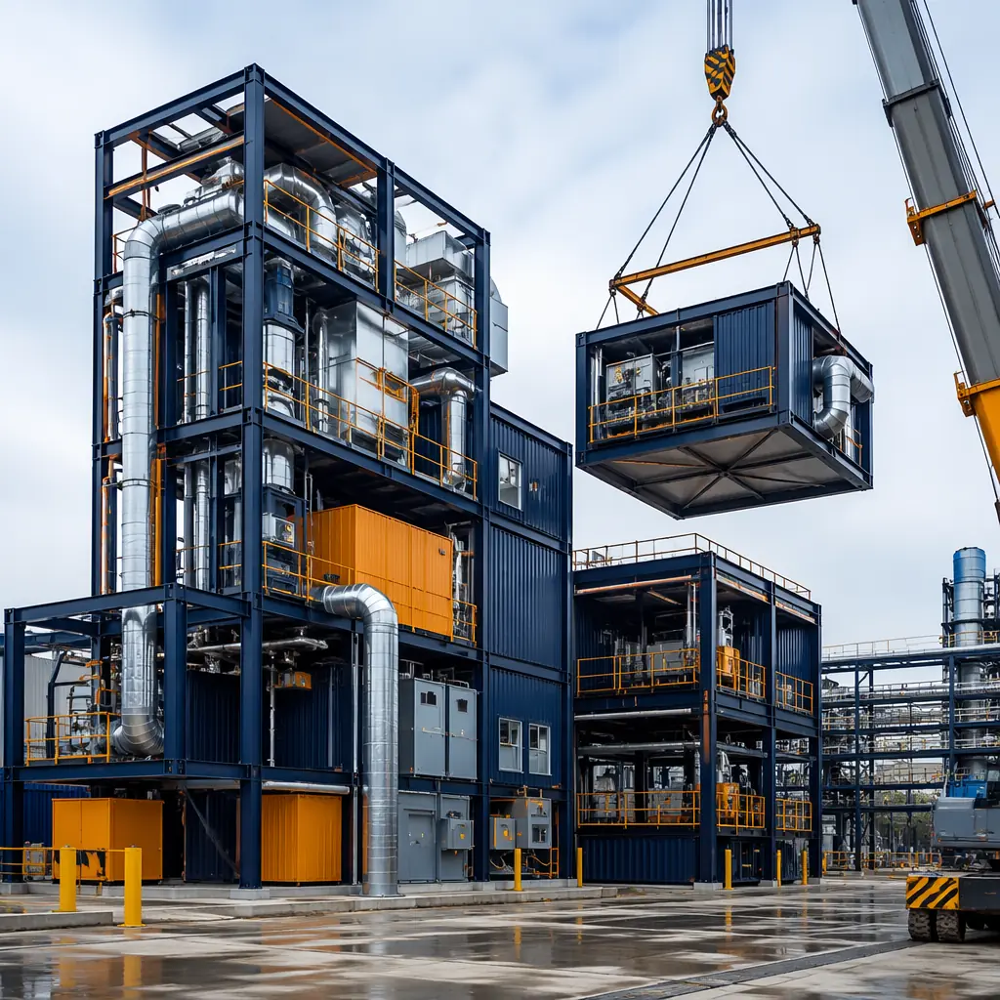
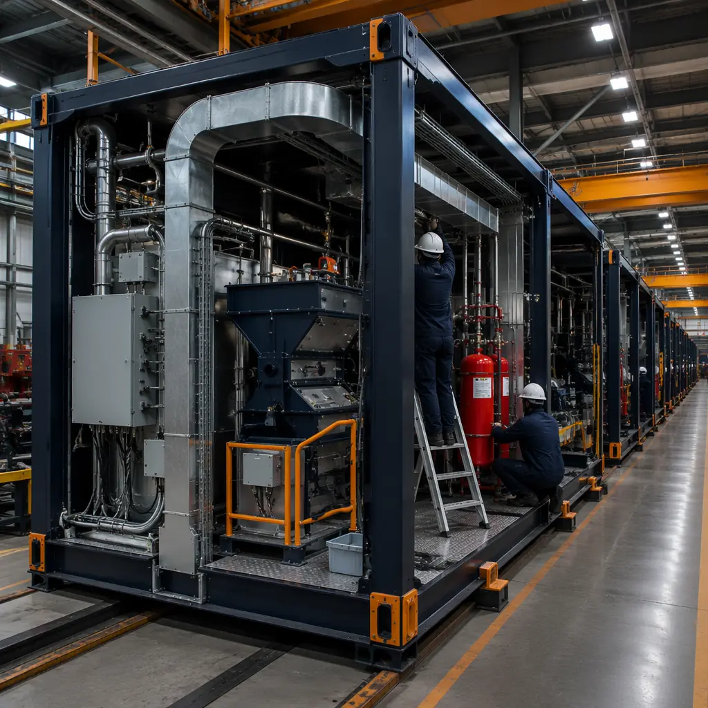
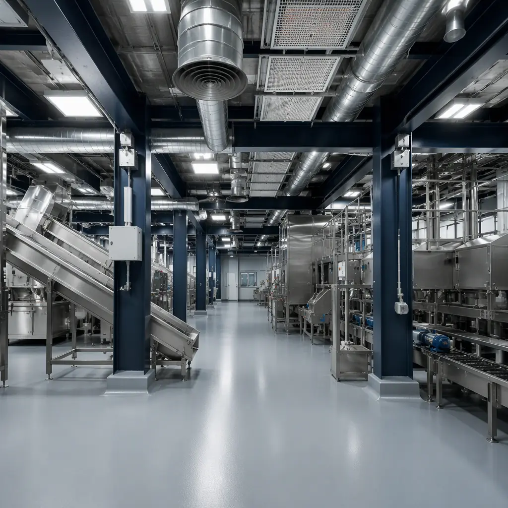
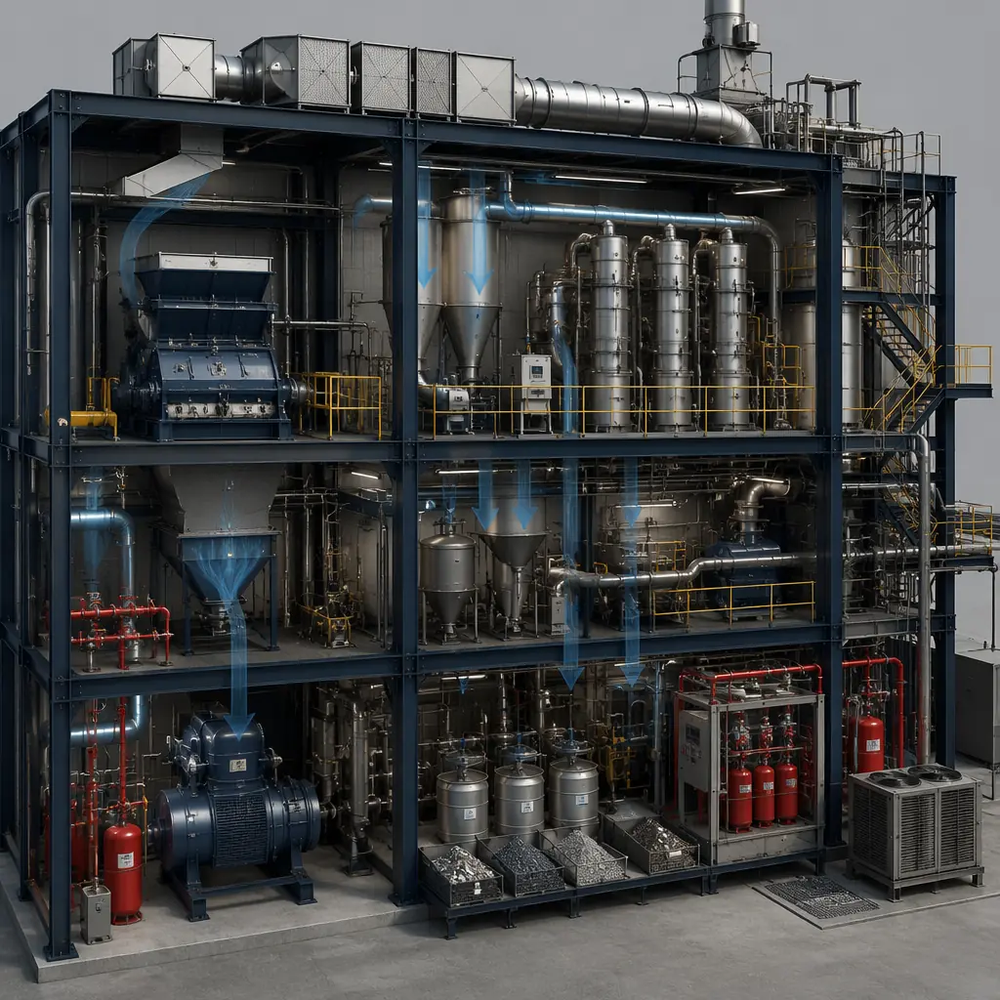

The electric vehicle revolution has a math problem no one is talking about: every EV sold today will produce a 400–600 kg lithium-ion battery pack that needs to be recycled in 10–15 years. With global EV sales projected to reach 40 million units annually by 2030, the pipeline of end-of-life batteries will hit 16–24 million tonnes per year — an industrial waste stream larger than the entire current global aluminum recycling industry. The facilities to process this material — battery disassembly lines, black mass extraction plants, hydrometallurgical refining facilities — need to be built at a speed and scale that conventional construction cannot deliver. Modular prefabrication is the answer: factory-built processing modules with integrated explosion-proof electrical systems, negative-pressure dust containment, and automated fire suppression, deployed in 6–12 months rather than the 24–36 months that conventional industrial construction requires. This article examines the engineering requirements, regulatory framework, and cost structure of modular battery recycling facilities — and why modular is rapidly becoming the default delivery method for circular economy infrastructure.

The Capacity Gap: Why Battery Recycling Needs Modular Construction Now
The battery recycling industry faces a construction bottleneck that conventional methods cannot solve. Three numbers frame the problem:
2.8 million tonnes of end-of-life EV batteries will need processing by 2030 in North America and Europe alone, according to the International Energy Agency's Global EV Outlook. Current global recycling capacity is approximately 300,000 tonnes per year. That means the industry needs to build roughly 10x its current capacity in the next 4 years — approximately 80–120 new recycling facilities of 25,000–30,000 tonnes annual capacity each. At 24–36 months per facility using conventional construction, the industry would need to start construction on every single one of those facilities today — and it hasn't.
Recycling facility construction costs $350–550 per square foot conventionally, driven by specialized requirements that general contractors rarely encounter: Class I Division 2 hazardous area electrical classification, ATEX-certified ventilation systems, lithium-ion fire suppression (water is ineffective and potentially dangerous on lithium fires), and negative-pressure dust containment to prevent heavy metal particulate from escaping the processing environment. Modular construction addresses these requirements by integrating them at the factory level — each module arrives with its hazardous-area electrical system pre-certified, its ventilation ductwork pressure-tested, and its fire suppression system commissioned — eliminating the multi-month field commissioning sequence that dominates conventional industrial construction schedules.
Recycling economics dictate distributed facilities, not centralized mega-plants. Transporting end-of-life EV batteries is expensive and dangerous: a truckload of 20–30 battery packs weighing 12–18 tonnes requires hazmat placarding, dedicated routing, and thermal monitoring during transit. The economic radius for battery collection is approximately 300–500 km — beyond that, transport costs exceed the recovered material value. This means the recycling industry needs 30–40 regional facilities in North America, not 5 mega-plants. Modular construction is the only delivery method that can deploy standardized, repeatable 25,000-tonne-per-year facilities at the speed this distributed model requires — the same logic that makes modular construction effective for EV battery gigafactories applies equally to their end-of-life counterparts.

Engineering Requirements: Hazardous-Material Processing in a Modular Format
Battery recycling facilities present engineering challenges that go well beyond standard industrial construction. Four requirements define the module design:
Explosion-proof electrical classification. For a deeper look, our modular university buildings — academic… guide covers the details. Lithium-ion battery disassembly releases flammable electrolyte vapors — primarily dimethyl carbonate and ethyl methyl carbonate — that form explosive atmospheres in poorly ventilated spaces. The battery disassembly and crushing areas of a recycling facility are classified as Class I Division 2 (NEC Article 500) or Zone 2 (IEC 60079) hazardous locations. This means every electrical component — lighting, motors, junction boxes, control panels — must be rated for hazardous atmospheres. In modular construction, the entire electrical system is installed and certified in the factory: explosion-proof LED fixtures with factory-sealed conduit entries, ATEX-rated exhaust fan motors with thermal overload protection, intrinsically safe instrumentation circuits for gas detection sensors. Factory certification eliminates the field inspection and rework cycle that typically adds 6–10 weeks to conventional industrial electrical commissioning — because an inspector who rejects a field-installed seal fitting on a Friday afternoon resets the schedule to the following Tuesday, while a factory-certified assembly is inspected once and never reopened.
Negative-pressure dust containment. For a deeper look, our modular vertical farm construction — bu… guide covers the details. The mechanical shredding and separation processes that produce "black mass" — the mixture of lithium, cobalt, nickel, and manganese compounds that is the feedstock for hydrometallurgical refining — generate fine particulate containing heavy metals. Regulatory exposure limits for cobalt and nickel dust are measured in micrograms per cubic meter. Modular recycling facilities achieve containment through a cascading negative-pressure design: the shredding module operates at -50 Pa relative to the adjacent sorting module, which operates at -25 Pa relative to the administrative module, which operates at -10 Pa relative to ambient. Air flows from clean areas toward dirty areas and is exhausted through HEPA H14 filtration before release. The pressure cascade is established by factory-installed variable-speed exhaust fans controlled by differential pressure sensors — a system that is commissioned and balanced in the factory rather than on site, where adjusting damper positions across 40 supply and exhaust diffusers can consume weeks of a commissioning agent's time.
Lithium-ion fire suppression. Water is the wrong extinguishing agent for lithium-ion battery fires — it reacts with lithium to produce hydrogen gas and can trigger thermal runaway propagation rather than suppression. The recognized fire suppression agents for lithium-ion battery fires are F-500 Encapsulator Agent (a water-based additive that encapsulates the electrolyte and prevents thermal runaway propagation), Novec 1230 (a clean agent that removes heat without conducting electricity), and inert gas systems (argon/nitrogen flooding that reduces oxygen concentration below the combustion threshold). Modular recycling facilities integrate these systems at the factory level: the shredding module's fire suppression piping, nozzle arrays, and agent storage tanks are installed and hydrostatically tested before the module leaves the factory, with only the inter-module pipe connections requiring field assembly. A fire-rated modular construction approach ensures that a fire event in the shredding module is contained for the duration required for suppression system activation and occupant evacuation.
Chemical-resistant flooring and containment. For a deeper look, our modular veterinary clinics — building a… guide covers the details. The hydrometallurgical refining process uses sulfuric acid, hydrogen peroxide, and organic solvents to leach metals from black mass and separate them through solvent extraction. Spills of these chemicals — even small ones — will destroy standard concrete flooring within weeks. Modular recycling facilities use factory-installed chemical-resistant flooring systems: 6mm thick vinyl ester or epoxy novolac monolithic flooring with integral cove bases welded at all wall-to-floor junctions, tested to withstand 72-hour immersion in 30% sulfuric acid without degradation. The floor is installed horizontally in the factory — a position that eliminates the pinhole and bubble defects common in field-applied chemical-resistant flooring, where applicators work on their knees in poorly lit conditions. Secondary containment — a continuous liquid-tight floor with 150mm high curbs at module perimeter joints, sealed with chemical-resistant polyurethane joint sealant — ensures that a spill in one module does not migrate to adjacent modules through the inter-module connection gap.

Facility Layout: The Standard 25,000-Tonne-Per-Year Module Set
Based on process engineering designs developed for three North American recycling projects, a standardized 25,000-tonne-per-year battery recycling facility decomposes into the following module set:
| Module Type | Qty | Size (m) | Function |
|---|---|---|---|
| Receiving & discharge | 2 | 12 x 24 | Battery pack receiving, deep-discharge to safe voltage, hazmat staging |
| Disassembly | 3 | 12 x 30 | Manual/semi-automated pack disassembly, module extraction, C1D2 electrical |
| Shredding & separation | 2 | 12 x 30 | Inert atmosphere shredding, magnetic separation, black mass production |
| Hydrometallurgical | 4 | 12 x 36 | Acid leaching, solvent extraction, crystallization, chemical-resistant flooring |
| Utilities & support | 3 | 12 x 18 | Electrical room, fire suppression tank farm, scrubber/ventilation, lab |
| Administrative | 2 | 12 x 18 | Control room, offices, locker rooms, positive-pressure safe zone |
| Total | 16 | ~85,000 sq ft gross floor area, 8–10 month factory production + 4–6 week site installation | |
This standardized module set has been designed to be replicable — the same 16-module configuration can be deployed at multiple regional sites with minimal site-specific engineering. The process equipment (shredders, leaching tanks, solvent extraction columns) is installed in the modules at the factory after the building shell is complete, eliminating the traditional industrial construction sequence where equipment installation must wait for the building to be weathertight. The result is a facility that arrives on site as a collection of fully equipped process modules that are connected in weeks rather than built from scratch over years.

Regulatory Framework: Permitting a Modular Hazardous Waste Facility
EV battery recycling facilities are regulated as hazardous waste treatment operations under RCRA (Resource Conservation and Recovery Act) in the US, and under the Industrial Emissions Directive in the EU. The permitting pathway involves three concurrent workstreams, and modular construction simplifies each:
Environmental permit (air, water, waste). For a deeper look, our modular water & wastewater treatment faci… guide covers the details. The air permit covers particulate emissions from shredding and fugitive VOC emissions from solvent extraction. Modular facilities simplify air permitting because the emission control equipment (HEPA filtration banks, activated carbon VOC adsorbers, wet scrubbers) is factory-installed and performance-tested before submission — the permit application can reference factory acceptance test data rather than projected performance estimates, reducing the regulatory review cycle from 12–18 months to 6–9 months in jurisdictions that accept pre-certified equipment data.
Fire code compliance. The International Fire Code (IFC) Chapter 32 and NFPA 855 (Standard for the Installation of Stationary Energy Storage Systems) govern lithium-ion battery handling facilities. Key requirements include: thermal monitoring of battery storage areas with automatic alarm at 70°C, minimum 3m separation between battery storage and combustible materials, and fire suppression systems designed for lithium-ion fires (water-only systems are explicitly not compliant). Modular facilities integrate these requirements at the factory: each battery storage module is equipped with thermocouple arrays connected to the facility's PLC-based fire alarm system, with alarming and suppression actuation logic programmed and tested before shipment. A comprehensive insurance assessment of the modular approach typically results in lower premiums than conventional construction, because factory-controlled quality reduces the probability of installation defects in life-safety systems.
Occupational health and safety. For a deeper look, our modular winery & craft beverage productio… guide covers the details. Battery recycling workers face exposure to cobalt, nickel, manganese, and organic solvents at concentrations that require continuous air monitoring and mandated respiratory protection above action levels. Modular facilities factory-install the air monitoring infrastructure — fixed-point photoionization detectors for VOC monitoring, real-time particulate monitors at breathing zone height, and a SCADA system that logs exposure data at 1-minute intervals. This pre-installed monitoring system satisfies OSHA's requirement for exposure assessment before operations begin, eliminating the 3–6 month post-construction monitoring period that conventionally built facilities need to establish baseline exposure data.
Planning a battery recycling or circular economy facility? Our industrial modular team can provide a concept design, module layout, permitting strategy, and cost estimate within 15 business days. Contact us to schedule a project scoping call.
The battery recycling industry is facing a construction challenge that demands a construction solution. The demand curve for recycling capacity is steeper than any other industrial sector — 10x growth in 4 years — and conventional construction, with its 24–36 month delivery timeline and field-dependent quality control, cannot meet it. Modular construction offers the only delivery method that matches the speed of the market: standardized facilities, factory-integrated hazardous-area systems, pre-certified environmental controls, and deployment timelines measured in months. For battery recyclers, EV manufacturers building in-house recycling capacity, and infrastructure investors funding the circular economy, the question is not whether to use modular construction — it is whether your competitors will deploy modular facilities and capture market share while your conventionally built plant is still in the permit review phase. For a detailed technical specification and cost model, start with our gigafactory construction guide and clean room facility analysis, both of which share engineering principles with battery recycling module design.